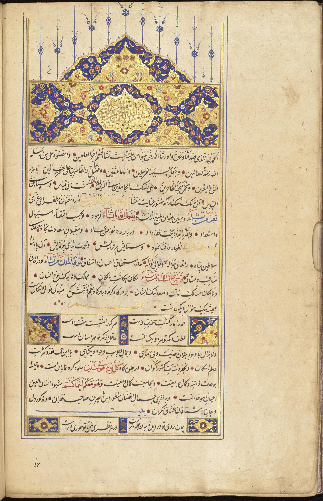
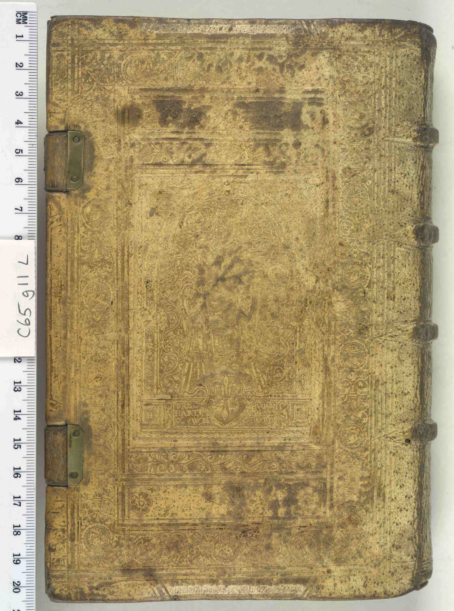

The Alchemy of Six-Month Pit Tanning
Where modern commercial leatherries take hours using toxic chromium salts, our master tanners spend half a year transforming raw equine shells in subterranean oak-bark pits.

Subterranean Pit infusions
Our raw shells are immersed in subterranean rock pits filled with natural vegetable tanning solutions concocted from ground European oak bark, chestnut wood, and quebracho. Over six months, the hides are systematically transferred through thirty distinct pits of escalating tannin concentration.
This slow, non-aggressive diffusion allows the complex polyphenolic tannin molecules to penetrate into the absolute center of the dense equine collagen fibers without distorting or hardening the skin. The result is leather of astonishing density, suppleness, and structural integrity.
Pure oak bark infusions
Aged tree bark rich in hydrolyzable pyrogallol tannins stabilizes the collagen lattice, imparting our leather's signature aroma and amber-undertone patina.

Artisanal Hand Currying
Tanned shells are hand-massaged with hot natural tallow, neatsfoot oil, and marine waxes in a process known as stuffing, filling every microscopic void with water-repelling nourishment.

Dark Cellar Maturation
Curried shells rest in humidity-controlled cellar vaults for ninety days, allowing the essential oils to homogenize before hand-dyeing with organic pigments.